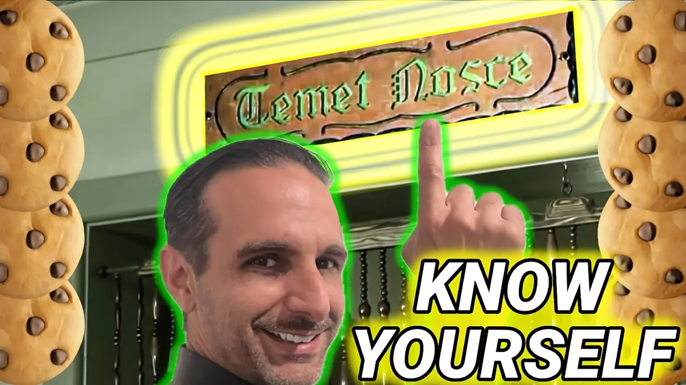

Unlock self-awareness with 3 powerful tools: journaling, mindfulness, and feedback. Discover how knowing yourself transforms your growth, career, and relationships.
Related Resources
- Episode
-  Unlock Your True Potential: Master “Temet Nosce†for Personal Growth 1/25 Self-awareness is the key to personal growth. Dive into the ancient principle of "Know Thyself" and uncover how understanding your values, strengths, and purpose can transform your life. This episode combines timeless wisdom with practical strategies to help you unlock your true potential.
- Books on Self-Awareness
-
📘 Daring Greatly: How the Courage to Be Vulnerable Transforms the Way We Live, Love, Parent, and Lead by Brené Brown
Brown encourages vulnerability+self-awareness as a way to cultivate courage & meaningful connections with others.
⧠Other editions: 📖 Paperback, 📱 Kindle, 🧠Audiobook | ğŸ—ºï¸ Intl: Chinese -
📗 The Power of Now by Eckhart Tolle
Tolle emphasizes the importance of living in the present moment, a key aspect of self-awareness & mindfulness.
⧠Other editions: 📖 Paperback, 📱 Kindle, 🧠Audiobook | ğŸ—ºï¸ Intl: Bosnian, Chinese (Simplified), French , Gujarati, Hindi, Japanese, Korean, Portuguese, Russian, Spanish (En Español) -
📒 Emotional Intelligence: Why It Can Matter More Than IQ by Daniel Goleman
Exploring how emotional intelligence shapes our success in relationships, work, and life, this work emphasizes its importance over traditional measures of intellect in navigating the world, highlighting the need for emotional self-awareness.
⧠Other editions: 📖 Paperback, 📱 Kindle, 🧠Audiobook | ğŸ—ºï¸ Intl: French, Marathi, Spanish (En Español) -
📙 Atomic Habits: An Easy & Proven Way to Build Good Habits & Break Bad Ones by James Clear
A comprehensive guide to understanding how small, incremental changes in behavior can compound over time, showing how to build good habits, break bad ones, and design an environment that supports lasting personal transformation in your life.
⧠Other editions: 📖 Paperback, 📱 Kindle, 🧠Audiobook | ğŸ—ºï¸ Intl: Spanish (En Español) -
📕 The Untethered Soul: The Journey Beyond Yourself by Michael A. Singer
Singer's deep dive into understanding the self & consciousness, offering tools to achieve clarity+self-awareness for spiritual growth.
⧠Other editions: 📖 Paperback, 📱 Kindle, 🧠Audiobook | ğŸ—ºï¸ Intl: Chinese, Spanish (En Español)